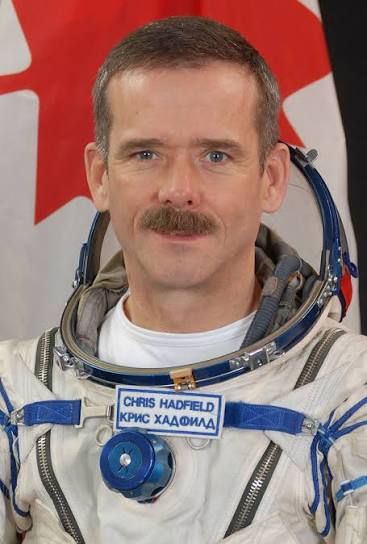
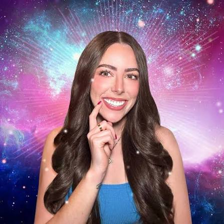
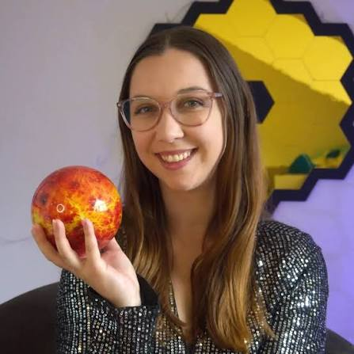
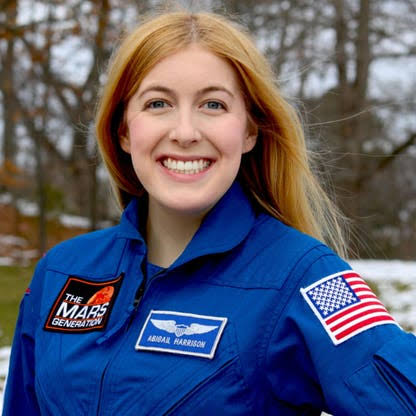
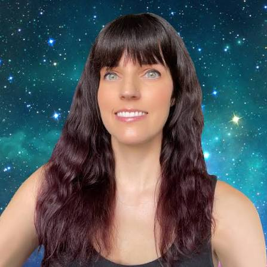
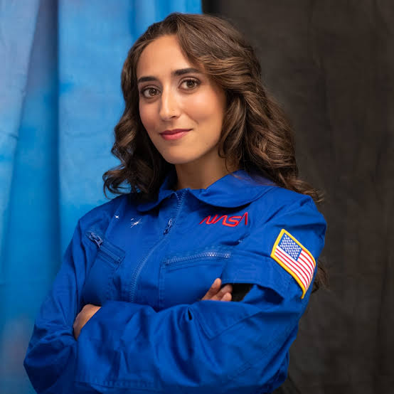

UNIVURSYL
From black holes to exoplanets, the Big Bang to tonight's sky — every discovery, every mission, every breakthrough. Explored here.
NASA's Roman Space Telescope has launched to the L2 point to survey vast cosmic regions and unlock mysteries of dark matter and dark energy, representing a landmark observatory for modern cosmology.
NASAThe Nancy Grace Roman Space Telescope has launched into orbit to revolutionize our understanding of the universe through unprecedented observations of galaxies and exoplanets.
NASAThe Nancy Grace Roman Space Telescope launches on a landmark mission to study billions of stars and galaxies across the cosmos.
NASANASA's Nancy Grace Roman space telescope begins its five-year primary mission to observe billions of stars and galaxies while surveying 100,000 exoplanets.
NASANASA's powerful Nancy Grace Roman Telescope launches on an ambitious mission to probe the cosmos and advance our understanding of the universe.
Solar SystemNASA's Hubble Space Telescope discovers a remarkable 10-sided atmospheric wave circling Saturn's south pole, revealing dynamic planetary weather patterns.
Singularities, event horizons, Hawking radiation
→ 02Habitable worlds beyond our solar system
→ 03The invisible scaffold of the cosmos
→ 04NASA, SpaceX, ESA, and beyond
→ 05The Big Bang, inflation, and cosmic evolution
→ 06Stars, supernovae, neutron stars, pulsars
→ 07Planets, moons, asteroids, comets
→ 08Observation guides, star charts, events
→# Solar Eclipse Through Human Eyes Imagine witnessing the Sun vanish from the sky, replaced by an eerie glowing ring—this is what will happen during the August 12, 2026 solar eclipse when the Moon slides directly in front of the Sun, casting Earth into an otherworldly twilight. Throughout history, this breathtaking celestial event has sparked wildly different interpretations across cultures: ancient Greeks saw it as divine punishment, the Diné people viewed it as a sacred time for renewal requiring retreat indoors, and communities in Benin and Togo believed the Sun and Moon were locked in battle, inspiring them to make peace with one another on Earth.
View on NASA APOD
Image Credit: Javier Castro Text: Keighley Rockcliffe (NASA GSFC, UMBC CSST, CRESST II)
Co-founder of string field theory and professor at CUNY. One of the world's most recognized science communicators spanning quantum mechanics, cosmology, and the future of humanity among the stars.
Founder of SpaceX and driving force behind Starship, the most powerful rocket ever built. Leading humanity's first serious attempt at becoming a multi-planetary species with Mars as the destination.
Professor at University of Manchester and host of landmark BBC documentaries including Wonders of the Universe. Brings rigorous science to mainstream audiences with rare clarity and wonder.
Research fellow at Oxford specializing in galaxy evolution and black holes. Her YouTube channel blends cutting-edge research with humor and accessibility — one of the most trusted science communicators online with 870K subscribers.
Called the "Indiana Jones of astronomy," Seager pioneered exoplanet atmospheric research. Her work on biosignatures is at the forefront of humanity's search for life beyond Earth.
Astronomer at Columbia University and creator of Cool Worlds, the definitive YouTube channel for exoplanet science. Kipping's work on exomoons, alien life, and the Fermi Paradox pushes the boundaries of what we know about the universe.
2017 Nobel Prize winner for the detection of gravitational waves. Theoretical work on black holes and wormholes inspired the film Interstellar and changed our understanding of spacetime.

Former commander of the ISS, Hadfield became a global phenomenon sharing life in space with millions online. His recordings from orbit and candid storytelling made space deeply personal for a generation.
Creator of Event Horizon, one of YouTube's most compelling documentary-style science channels. Godier's deep dives into Dyson spheres, strange stars, SETI, and future civilizations blend rigorous science with cinematic storytelling.
Theoretical astrophysicist and author of The End of Everything. One of the most engaging voices in science on social media, focusing on the ultimate fate of the universe and dark energy.
MIT researcher and host of one of the world's most-watched podcasts. Long-form conversations with Elon Musk, physicists, and space entrepreneurs rank among the best science discussions online.
Publisher of Universe Today and one of the most prolific space journalists online. If NASA announced something yesterday, Fraser has a video today. Clear, reliable, and passionately current with every space story that matters.
Spent 9 years at NASA designing hardware for the Mars Curiosity rover before becoming one of YouTube's biggest science communicators with 50M+ subscribers. Science made genuinely thrilling.
Creator of Veritasium, one of YouTube's most respected science channels with 20M+ subscribers. Known for elegant, deeply researched explainers on physics, space, and the nature of reality.
The world's most watched science animation channel with 25M+ subscribers. Transforms the most complex topics in cosmology, astrophysics, and space exploration into stunning visual stories.
Creator of Science and Futurism with Isaac Arthur — deep, rigorous explorations of space colonization, Dyson spheres, interstellar travel, and humanity's long-term future among the stars.

One of Instagram's most compelling space educators, Alexandra brings astronomy and astrophysics to a massive audience through stunning visuals and accessible storytelling about the cosmos.
Creator of Astronomy with Andrea, sharing telescope tips, night sky guides, and deep-sky observations with a growing community of backyard astronomers and space enthusiasts worldwide.
Creator of "What Da Math" with over 1 million subscribers. Covers every major astronomical discovery in plain language, often within hours of publication — daily space news done right.
The operational genius behind SpaceX. Shotwell has overseen the company's growth from startup to world's leading launch provider, quietly executing the most ambitious space program in history.
Known as @astrophysicist_rose, Dr. Waugh makes complex astrophysics concepts accessible and beautiful, building a growing community of science enthusiasts around the wonders of the cosmos.

Sydney-based astrophysicist and one of Australia's most prominent science communicators. Bridges Indigenous Australian astronomical knowledge with modern astrophysics in a uniquely powerful way.

Known as "Astronaut Abby," Harrison has been preparing publicly for a mission to Mars since she was a teenager. A passionate advocate for space exploration and STEM education for the next generation.
Known as @adastrasu, Martínez is a space engineer sharing the reality of working in the space industry. Her content demystifies what it takes to build the rockets and systems that reach the stars.
The Backyard Astronomy Guy and official NASA JPL Solar System Ambassador. Connects communities with the night sky through public outreach, telescope events, and accessible space education.
Makes rocketry accessible through deep-dive YouTube videos and live launch coverage. His interviews with Elon Musk at Starbase are among the most detailed public conversations about Starship ever recorded.
Professor at Barnard College and author of Black Hole Blues. Writes about gravitational waves and black holes with rare literary and scientific depth — science as art.
Science communicator and creator of @thegalacticgal, bringing space science to life through engaging social content covering everything from black holes to the latest NASA missions.

Planetary astro PhD and artist who lives where science meets art. Creator of @stellerarts, Brock produces stunning space-inspired paintings that make the cosmos tangible and breathtaking.

Astrophysics PhD from UC Berkeley, aerospace TPM, and author of STARSTRUCK. Forbes Under 30. Nance's personal story of perseverance and passion for the cosmos inspires the next generation of scientists.
Became the youngest American to orbit Earth and the first person with a prosthetic body part in space aboard SpaceX's Inspiration4 mission in 2021. A childhood cancer survivor turned space pioneer.
Known as @science.sam, Yammine is a neuroscience PhD turned science communicator whose passion for discovery extends across space science, making complex research feel exciting and accessible.